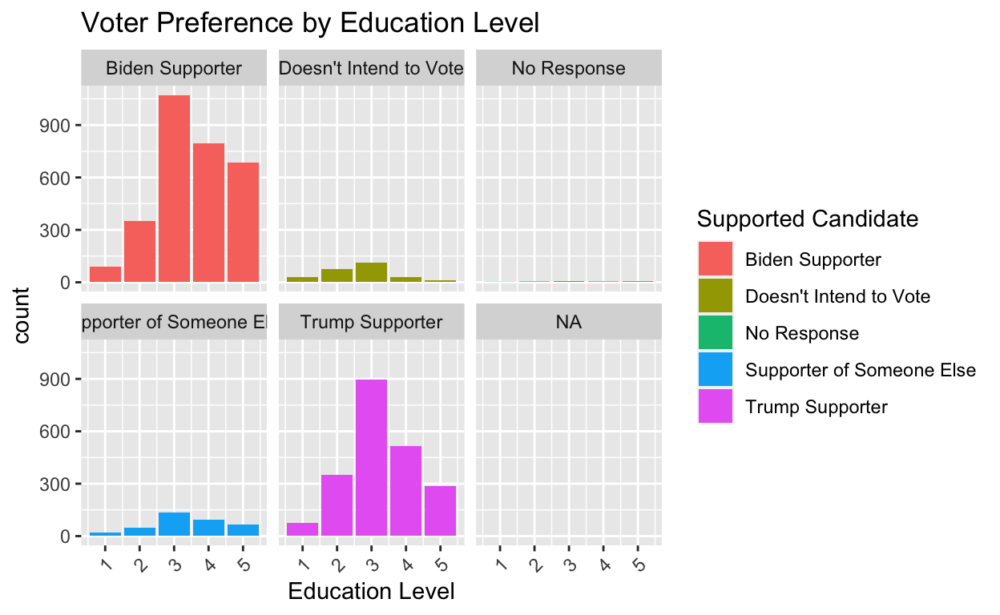
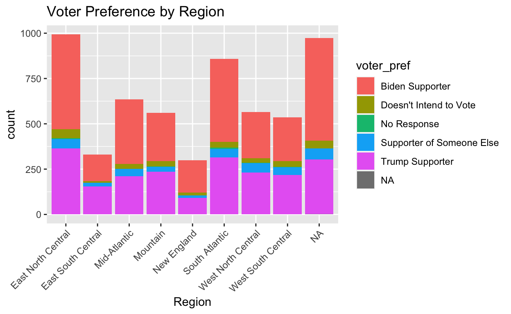
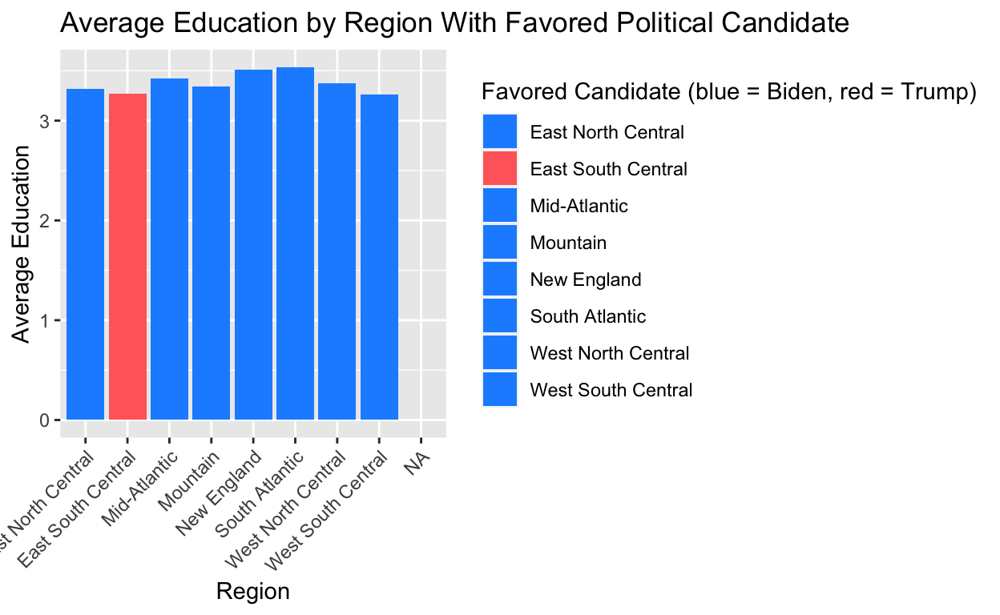

The Influence of Schooling and Hometowns on Political Affiliations
I am interested to see whether or not education impacts Americans’ political affiliations. There is a wide range of educational opportunities available for students in America, for there are man different public, private, vocational, religious, or non-religious schools that students can attend. I am curious to examine how political affiliations are formed, and think that there is a strong possibility that the level and type of schooling might play an important role in influencing political ideals. That being said, access to schooling differs across America, especially in more rural areas where schools and teaching staff might be less concentrated. Additionally, socioeconomic aspects also might come into play, for the tuition of private schooling and universities has increased dramatically in the past years. I am assuming that respondents to the survey with higher levels of education in more urban areas will be more likely to vote for the Democrat party. However, I am curious to see if my hypothesis is correct and whether there will be a clear correlation between level of school and political affiliation.
library(tidyverse)
library(readxl)
EXCEL <- read_excel("~/Desktop/EXCEL.xlsx")Does hometown location and length of schooling affect American political ideologies? In this study, using the cross-sectional American National Election Studies 2020-2022 Social Media Survey Data, my goal is to analyze the relationship between different types and lengths of schooling and how that can affect American’s political affiliations. I am interested to see if the level of schooling (grad school, college, high school grad, vocational, or none) will have any correlation with level of political progressiveness. I am also curious to see if the location of the schooling plays a role, for I know that public schools’ curriculums and budgets differ widely across the United States. I assume that students stemming from more rural areas who experience less schooling will likely lean more conservatively in regards to political affiliations. In this survey, the American National Election Studies group, led by Stanford and the University of Michigan, surveyed people through Facebook, capturing data regarding political views as well as demographic information. The participants of the survey are random, however, the study was conducted on the internet, predominately through Facebook, which might inherently limit the scope of respondents.
There are many variables in this data set that will help to examine the relationship between schooling and political affiliations. The variable profile_educ5 displays the level of schooling of each survey respondent, ranking numerically from lowest to highest with 1 being less schooling than high school and 5 being a post-graduate degree. The variable vote20d1 displays the voter’s preference for the 2020 presidential election - showing political affiliation through respondent’s supported candidate in 2020. The variables profile_state and profile_region9 both help to specifically describe the voters’ residential location. These variables will help me to analyze the connection - or lack thereof - between schooling type, location, and political affiliations.
library(ggplot2)
library(tidyverse)
social_data1 <- EXCEL |>
rename(profile_state = ...17, profile_educ5 = ...13, voting = ...98, profile_region9 = ...19)
## Label Mutations
education <- social_data1 |>
mutate(profile_educ5 = as.numeric((profile_educ5))) |>
mutate(education_level = case_when(
profile_educ5 == 1 ~ "Less than HS",
profile_educ5 == 2 ~ "HS Graduate",
profile_educ5 == 3 ~ "Vocational/Some College",
profile_educ5 == 4 ~ "Bachelor's Degree",
profile_educ5 == 5 ~ "Post Grad Study/Professional Degree"))|>
mutate(region = case_when(
profile_region9 == 1 ~ "New England",
profile_region9 == 2 ~ "Mid-Atlantic",
profile_region9 == 3 ~ "East North Central",
profile_region9 == 4 ~ "West North Central",
profile_region9 == 5 ~ "South Atlantic",
profile_region9 == 6 ~ "East South Central",
profile_region9 == 7 ~ "West South Central",
profile_region9 == 8 ~ "Mountain")) |>
mutate(voter_pref = case_when(
voting == -7 ~ "No Response",
voting == 1 ~ "Trump Supporter",
voting == 2 ~ "Biden Supporter",
voting == 3 ~ "Supporter of Someone Else",
voting == 4 ~ "Doesn't Intend to Vote")) ## Count of Survey Respondents Based on Education Length
count_edu <- education |>
count(education_level)
knitr::kable(count_edu, col.names = c("Level of Schooling", "Number of Respondents"))| Level of Schooling | Number of Respondents |
|---|---|
| Bachelor’s Degree | 1438 |
| HS Graduate | 824 |
| Less than HS | 217 |
| Post Grad Study/Professional Degree | 1052 |
| Vocational/Some College | 2219 |
| NA | 1 |
## Count of Survey Respondents Based on Residential Regions
count_region <- education |>
count(region)
knitr::kable(count_region, col.names = c("Residential Region", "Number of Respondents"))| Residential Region | Number of Respondents |
|---|---|
| East North Central | 994 |
| East South Central | 330 |
| Mid-Atlantic | 635 |
| Mountain | 560 |
| New England | 299 |
| South Atlantic | 858 |
| West North Central | 565 |
| West South Central | 536 |
| NA | 974 |
## Count of Survey Respondents and Their Supported Candidates in the 2020 Presidential Election
count_voter <- education |>
count(voter_pref)
knitr::kable(count_voter, col.names = c("Supported Candidate", "Number of Respondents"))| Supported Candidate | Number of Respondents |
|---|---|
| Biden Supporter | 2991 |
| Doesn’t Intend to Vote | 265 |
| No Response | 16 |
| Supporter of Someone Else | 356 |
| Trump Supporter | 2122 |
| NA | 1 |
## Voter Preference by Education Level Graph
##Graph 1
graph1 <- education |>
group_by(voter_pref, profile_educ5) |>
summarize(count = n()) |>
ggplot(mapping = aes(x = profile_educ5, y = count, fill = voter_pref)) +
geom_col(stat = "identity") +
labs(x = "Education Level", Y = "Count of Voters", title = "Voter Preference by Education Level", fill = "Supported Candidate") +
theme(axis.text.x = element_text(angle = 45, hjust = 1))
graph1 ## Graph 2
graph2 <- education |>
group_by(voter_pref, profile_educ5) |>
summarize(count = n()) |>
ggplot(mapping = aes(x = profile_educ5, y = count, fill = voter_pref)) +
geom_col(stat = "identity") +
facet_wrap(vars(voter_pref)) +
labs(x = "Education Level", Y = "Count of Voters", title = "Voter Preference by Education Level", fill = "Supported Candidate") +
theme(axis.text.x = element_text(angle = 45, hjust = 1))
graph2 
## Voter Preference by Surveyed Regions
count_region <- education |>
mutate(region = case_when(
profile_region9 == 1 ~ "New England",
profile_region9 == 2 ~ "Mid-Atlantic",
profile_region9 == 3 ~ "East North Central",
profile_region9 == 4 ~ "West North Central",
profile_region9 == 5 ~ "South Atlantic",
profile_region9 == 6 ~ "East South Central",
profile_region9 == 7 ~ "West South Central",
profile_region9 == 8 ~ "Mountain")) |>
group_by(region, voter_pref) |>
summarize(count = n()) |>
ggplot(mapping = aes(x = region, y = count, fill = voter_pref)) + geom_histogram(stat = "identity") +
labs(x = "Region", Y = "Count of Voters", title = "Voter Preference by Region") +
theme(axis.text.x = element_text(angle = 45, hjust = 1))
count_region
## Counting Candidate Winners in Each Region
political_stance <- education |>
group_by(region, voter_pref) |>
count(region)
knitr::kable(political_stance, col.names = c("Region", "Supported Candidate", "Number of Survey Respondents"))| Region | Supported Candidate | Number of Survey Respondents |
|---|---|---|
| East North Central | Biden Supporter | 523 |
| East North Central | Doesn’t Intend to Vote | 50 |
| East North Central | No Response | 4 |
| East North Central | Supporter of Someone Else | 52 |
| East North Central | Trump Supporter | 365 |
| East South Central | Biden Supporter | 147 |
| East South Central | Doesn’t Intend to Vote | 9 |
| East South Central | Supporter of Someone Else | 20 |
| East South Central | Trump Supporter | 154 |
| Mid-Atlantic | Biden Supporter | 357 |
| Mid-Atlantic | Doesn’t Intend to Vote | 26 |
| Mid-Atlantic | Supporter of Someone Else | 41 |
| Mid-Atlantic | Trump Supporter | 211 |
| Mountain | Biden Supporter | 265 |
| Mountain | Doesn’t Intend to Vote | 31 |
| Mountain | No Response | 2 |
| Mountain | Supporter of Someone Else | 27 |
| Mountain | Trump Supporter | 235 |
| New England | Biden Supporter | 179 |
| New England | Doesn’t Intend to Vote | 16 |
| New England | Supporter of Someone Else | 13 |
| New England | Trump Supporter | 91 |
| South Atlantic | Biden Supporter | 457 |
| South Atlantic | Doesn’t Intend to Vote | 32 |
| South Atlantic | No Response | 7 |
| South Atlantic | Supporter of Someone Else | 47 |
| South Atlantic | Trump Supporter | 315 |
| West North Central | Biden Supporter | 255 |
| West North Central | Doesn’t Intend to Vote | 25 |
| West North Central | No Response | 2 |
| West North Central | Supporter of Someone Else | 52 |
| West North Central | Trump Supporter | 231 |
| West South Central | Biden Supporter | 241 |
| West South Central | Doesn’t Intend to Vote | 33 |
| West South Central | No Response | 1 |
| West South Central | Supporter of Someone Else | 43 |
| West South Central | Trump Supporter | 218 |
| NA | Biden Supporter | 567 |
| NA | Doesn’t Intend to Vote | 43 |
| NA | Supporter of Someone Else | 61 |
| NA | Trump Supporter | 302 |
| NA | NA | 1 |
### Average Education by Region
edu_avg <- education |>
group_by(region) |>
summarize(avg_education = mean(profile_educ5))
knitr::kable(edu_avg, col.names = c("Region", "Average Level of Education"))| Region | Average Level of Education |
|---|---|
| East North Central | 3.320926 |
| East South Central | 3.269697 |
| Mid-Atlantic | 3.420472 |
| Mountain | 3.344643 |
| New England | 3.508361 |
| South Atlantic | 3.536131 |
| West North Central | 3.373451 |
| West South Central | 3.263060 |
| NA | NA |
colors <- c("East North Central" = "dodgerblue", "East South Central" = "indianred1", "Mid-Atlantic" = "dodgerblue", "Mountain" = "dodgerblue", "New England" = "dodgerblue", "South Atlantic" = "dodgerblue", "West North Central" = "dodgerblue", "West South Central" = "dodgerblue")
graph3 <- education |>
group_by(region) |>
summarize(avg_education = mean(profile_educ5)) |>
ggplot(mapping = aes(x= region, y = avg_education, fill = region)) +
geom_col() +
scale_fill_manual(values = colors) +
labs(x = "Region", y = "Average Education", title = "Average Education by Region With Favored Political Candidate", fill = "Favored Candidate (blue = Biden, red = Trump)") +
theme(axis.text.x = element_text(angle = 45, hjust = 1))
graph3
## Regression
education <- education |>
mutate(voting = as.numeric((voting)))
lm1 <- lm(voting ~ profile_educ5 + region, data = education)
lm1
Call:
lm(formula = voting ~ profile_educ5 + region, data = education)
Coefficients:
(Intercept) profile_educ5
1.834691 -0.025654
regionEast South Central regionMid-Atlantic
-0.102326 0.067230
regionMountain regionNew England
-0.041746 0.101465
regionSouth Atlantic regionWest North Central
-0.055165 -0.008326
regionWest South Central
0.028869 regression <- summary(lm1)
regression
Call:
lm(formula = voting ~ profile_educ5 + region, data = education)
Residuals:
Min 1Q Median 3Q Max
-8.8379 -0.7160 0.2134 0.2974 2.3487
Coefficients:
Estimate Std. Error t value Pr(>|t|)
(Intercept) 1.834691 0.050656 36.219 <2e-16 ***
profile_educ5 -0.025654 0.012520 -2.049 0.0405 *
regionEast South Central -0.102326 0.057961 -1.765 0.0776 .
regionMid-Atlantic 0.067230 0.046361 1.450 0.1471
regionMountain -0.041746 0.048202 -0.866 0.3865
regionNew England 0.101465 0.060217 1.685 0.0921 .
regionSouth Atlantic -0.055165 0.042596 -1.295 0.1954
regionWest North Central -0.008326 0.048069 -0.173 0.8625
regionWest South Central 0.028869 0.048892 0.590 0.5549
---
Signif. codes: 0 '***' 0.001 '**' 0.01 '*' 0.05 '.' 0.1 ' ' 1
Residual standard error: 0.9123 on 4768 degrees of freedom
(974 observations deleted due to missingness)
Multiple R-squared: 0.004229, Adjusted R-squared: 0.002559
F-statistic: 2.531 on 8 and 4768 DF, p-value: 0.00953var_labels <- c(
"(Intercept)" = "Intercept",
"profile_educ52" = "High School Graduate",
"profile_educ53" = "Vocational / Some College",
"profile_educ54" = "Bachelor's Degree",
"profile_educ55" = "Post Grad Study/Professional Degree",
"regionEast South Central" = "East South Central Region",
"regionMid-Atlantic" = "Mid-Atlantic Region",
"regionMountain" = "Mountain Region",
"regionNew England" = "New England Region",
"regionSouth Atlantic" = "South Atlantic Region",
"regionWest North Central" = "West North Central Region",
"regionWest South Central" = "West South Central Region")
modelsummary::modelsummary(lm1,
statistic = c("s.e. = {std.error}",
"p = {p.value}"),
coef_map = var_labels,
gof_map = c("nobs", "r.squared", "adj.r.squared"))| (1) | |
|---|---|
| Intercept | 1.835 |
| s.e. = 0.051 | |
| p = <0.001 | |
| East South Central Region | −0.102 |
| s.e. = 0.058 | |
| p = 0.078 | |
| Mid-Atlantic Region | 0.067 |
| s.e. = 0.046 | |
| p = 0.147 | |
| Mountain Region | −0.042 |
| s.e. = 0.048 | |
| p = 0.387 | |
| New England Region | 0.101 |
| s.e. = 0.060 | |
| p = 0.092 | |
| South Atlantic Region | −0.055 |
| s.e. = 0.043 | |
| p = 0.195 | |
| West North Central Region | −0.008 |
| s.e. = 0.048 | |
| p = 0.862 | |
| West South Central Region | 0.029 |
| s.e. = 0.049 | |
| p = 0.555 | |
| Num.Obs. | 4777 |
| R2 | 0.004 |
| R2 Adj. | 0.003 |
The overall coefficient of the intercept is 2.037, which means that at their reference levels - less education than a HS diploma and East North Central Region - the survey participants are estimated to vote for Joe Biden. The p-value is also extremely small at <0.001, which means that I can reject the null hypothesis and consider the relationship statistically significant. In other words, both education and location do seem to have an effect, although a small one, on political affiliations. That being said, while the p-values are all less than 0.05 when examining the different levels of education, the p-values are dramatically higher when looking at the different regions that the survey respondents stem from. In fact, for all regions the p-values would be too high to imply that there is adequate evidence to reject the null hypothesis. This leads me to assume that education has more of an effect on political affiliations than residential region does. Overall, the R2 value is 0.008, which is extremely low and informs me that while there is a slight relationship between political affiliation, schooling length, and residential region, it is very small and there are likely many other variables that influence political ideology.
There are many other variables that could be have impacted this data, such as socioeconomic status, profession, religion, and family political affiliations, however, based on this data, it seems that level of education does slightly impact political stances. As seen in the above graph, the region with the second lowest average level of education was the only region in the survey in which Trump, the conservative candidate, won. As seen in Graph #2, Biden was able to secure the majority of votes from the more educated survey respondents. This does support my hypothesis that those who pursue higher educations will be more progressive in their affiliations.
In conclusion, this data suggests that there is a relationship, although it is extremely small, between politics and length of schooling. I did feel as though I had to be extremely careful while analyzing this data, since there are so many other variables that could influence political stances other than just schooling and residential location. I also think the data is lacking some important perspectives. As seen in the counts and graphs above, there is a lack of representation from some regions as well as educational levels. For example, the East North Central Region had 944 respondents while New England only had 299. I also think it is important to remember that this survey was conducted primarily through social media, particularly Facebook, which is used by a specific age and demographic. If I was leading this survey I would try to reach the populations who might not be avid Facebook users, such as older people as well as the younger generations who might be more active on sites such as Instagram. This might involve phone calls, letters in the mail, or in-person outreach in order to connect with those who do not use social media. Of course, those possibilities are limited by both money and time. However, I do wonder if the data would be different if there was more even representation across ages, regions, and socioeconomic demographics. Overall, while the p-value does imply that my hypothesis is supported, the R2 value shows that the relationship between length of schooling, residential region, and political affiliations in the 2020 Presidential Election is very small.